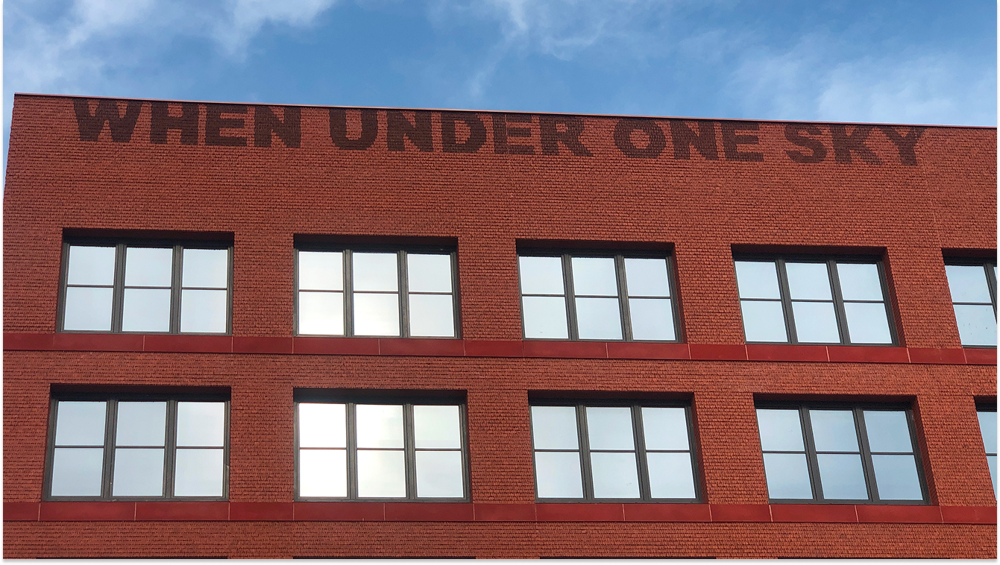
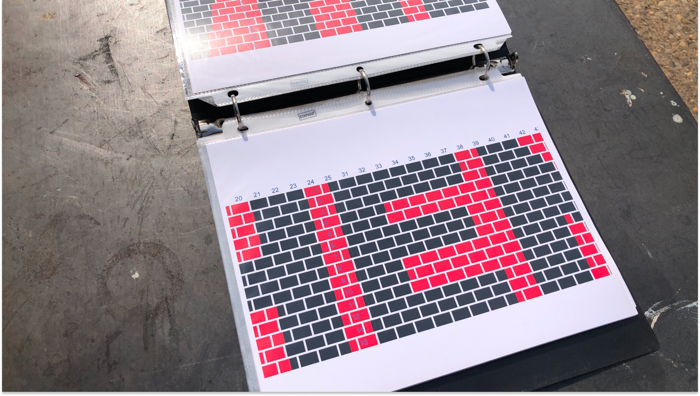
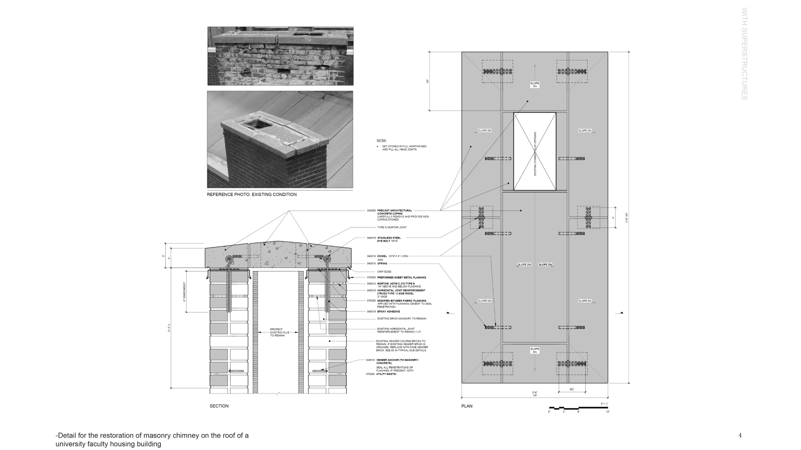
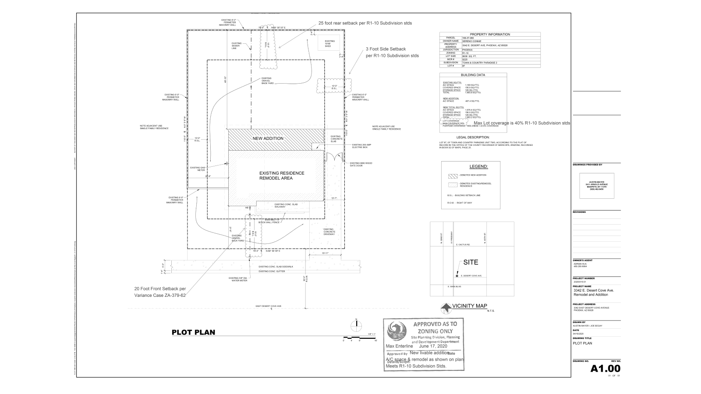
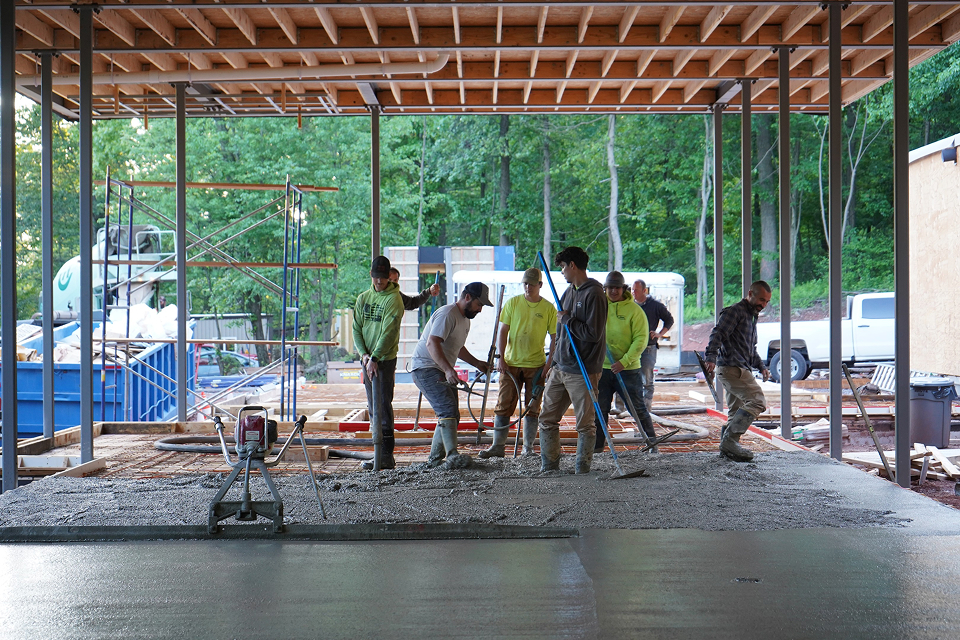
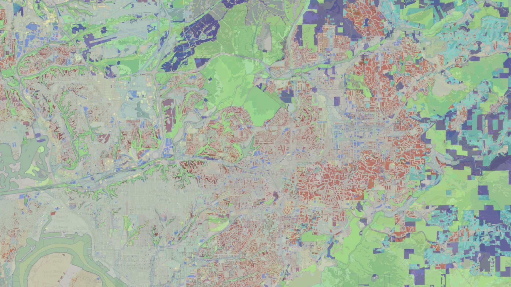

Computer Aided Design & Restoration Services
Philadelphia, PA | San Diego, CA
+1 (856) 390-3608
info@mayerstudio.org
©2021–2026
Mayer Studio is a building science practice providing computer-aided design and restoration services for existing buildings. The collaborative based organization works across residential, cultural, and historic structures with a focus on documentation, analysis, and the careful stewardship of the built environment for future generations.





